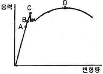
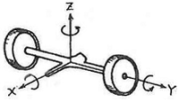
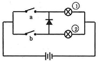

자동차정비산업기사 (2015-03-08 기출문제)
1과목: 일반기계공학
1. 주석계 화이트 메탈에 관한 설명으로 틀린 것은?
- 베어링용 합금이다.
- 배빗메탈이라고도 한다.
- Sn -Sb -Cu계 합금이다.
- 고속, 고하중용 베어링으로는 사용할 수 없다.
(정답률: 81%)

2. 응력에 관한 설명으로 옳지 않은 것은?
- 사용응력은 허용응력보다 작은 값이어야 한다.
- 두 축 방향으로 작용하는 응력을 2축 응력이라 한다.
- 충격에 의해 생기는 응력은 정하중으로 작용하는 경우의 3배가 된다.
- 보에서 굽힘으로 인하여 발생하는 최대인장응력은 중립축으로부터 가장 먼 거리에서 나타난다.
(정답률: 69%)
3. 유압제어밸브의 기능에 따른 분류 중 유량제어밸브는?
- 스로틀 밸브
- 릴리프 밸브
- 시퀀스 밸브
- 카운터밸런스 밸브
(정답률: 66%)
4. 아크 용접에서 언더 컷(under cut)은 어떤 조건일 때 가장 많이 나타나는가?
- 전류 부족, 용접 속도 빠름
- 전류 부족, 용접 속도 느림
- 전류 과대, 용접 속도 빠름
- 전류 과대, 용접 속도 느림
(정답률: 75%)
5. 리벳이음을 용접이음과 비교한 설명으로 틀린 것은?
- 구조물 등에서 현장 조립할 때에는 용접이음보다 쉽다.
- 경합금을 이음할 때는 용접이음보다 신뢰성이 떨어진다.
- 용접이음과 같이 강판 등을 영구적으로 접합할 때 사용한다.
- 용접이음과는 달리 초기응력에 의한 잔류변형이 생기지 않으므로 취약파괴가 일어나지 않는다.
(정답률: 68%)
6. Al, Cu, Mg에서 구성된 합금에서 인장강도가 크고 시효경화를 일으키는 고력(고강도) 알루미늄 합금은?
- Y합금
- 두랄루민
- 실루민
- 로우엑스
(정답률: 83%)
7. 테이퍼가 있는 일종의 쐐기로서 축과 축을 결합하는 경우 축 방향으로 작용하는 압축력이나 인장력에 대해서 풀리지 않도록 부품을 결합할 때 사용하는 기계요소는?
- 핀
- 코터
- 와셔
- 스플라인
(정답률: 68%)
8. 측정치의 통계적 용어에 관한 설명으로 옳은 것은?
- 치우침(bias) -참값과 모평균과의 차이
- 오차(error) -측정치와 시료평균과의 차이
- 편차(deviation) -측정치와 참값과의 차이
- 잔차(residual) -측정치와 모평균과의 차이
(정답률: 74%)
9. 재료의 인장강도가 4500 N/mm2인 연강재의 허용응력이 375 N/mm2 이라면 안전율은?
- 10
- 11
- 12
- 13
(정답률: 77%)
10. 유압유의 구비조건이 아닌 것은?
- 비압축성일 것
- 적당한 점도가 있을 것
- 열을 흡수·기화할 수 있을 것
- 녹이나 부식을 방지할 수 있을 것
(정답률: 73%)
11. 스프링 백 현상은 어느 작업 시 가장 많이 발생하는가?
- 용접
- 절삭
- 열처리
- 프레스
(정답률: 85%)
12. 전동용 평벨트(belt) 재료의 구비조건이 아닌 것은?
- 탄성이 작을 것
- 마찰계수가 클 것
- 인장강도가 클 것
- 열이나 기름에 강할 것
(정답률: 70%)
13. 탄소강의 조직 중 경도가 가장 큰 조직은?
- 페라이트
- 마텐자이트
- 펄라이트
- 오스테나이트
(정답률: 74%)
14. 열처리의 담금질액 중 냉각속도가 가장 빠른 것은?
- 물
- 기름
- 비눗물
- 소금물
(정답률: 80%)
15. 드릴링 머신에서 할 수 없는 작업은?
- 코킹
- 카운터 보링
- 리밍
- 카운터 싱킹
(정답률: 66%)
16. 프레스 전단작업에서 판재를 펀치로 뽑기하는 작업은?
- 노칭(notching)
- 트리밍(trimming)
- 브로칭(broaching)
- 블랭킹(blanking)
(정답률: 72%)
17. 수면에서 5m 높이에 설치된 펌프가 펌프로부터 높이 30m인 곳에 매초 1m2의 물을 보내려면 이론상 동력은 약 몇 kW가 필요한가?(오류 신고가 접수된 문제입니다. 반드시 정답과 해설을 확인하시기 바랍니다.)
- 245
- 294
- 343
- 400
(정답률: 54%)
18. 외경이 내경(d 1)의 2배인 중공축과 같은 비틀린 모멘트를 전달하는 중심축의 직경은?
- 1.55 d1
- 1.96 d1
- 2.47 d1
- 2.74 d1
(정답률: 62%)
19. 탄소강의 응력-변형 곡선에서 항복점은?

- A
- B
- C
- D
(정답률: 79%)
20. 탄성한도 내에서 인장하중을 받는 붐에 발생하는 응력에 의한 단위 체적 당 저장되는 탄성에너지가 u1일 때 봉에 발생하는 인장응력이 2배가 되면 단위 체적 당 저장되는 탄성에너지는?
- 1/4 u1
- 1/2 u1
- 2u1
- 4u1
(정답률: 53%)
2과목: 자동차엔진
21. 디젤 기관의 기계식 연료분사장치 중 연료의 분사량을 조절하는 것은?
- 연료공급 펌프
- 연료여과기
- 조속기
- 타이머
(정답률: 83%)
22. 기관의 공기과잉률에 대한 설명으로 맞는 것은?
- 이론 혼합비와 실제 소비한 공기가 1:1인 것을 말한다.
- 실제 운전에서 흡입된 공기량을 이론상 완전 연소에 필요한 공기량으로 나눈 값을 말한다.
- 공기과잉율은 이론 공기량에 대한 연료의 중량 비를 말한다.
- 연료의 중량에 대한 실제 공기량과의 비를 말한다.
(정답률: 73%)
23. 밸브스프링의 서징(surging) 현상 방지법으로 틀린 것은?
- 피치가 서로 다른 이중 스프링을 사용한다.
- 부등 피치 스프링을 사용한다.
- 원추형 스프링을 사용한다.
- 밸브스프링 고유 진동수를 밸브개폐 횟수와 같게 한다.
(정답률: 80%)
24. 흡기매니폴드 압력변화를 피에조(Piezo) 소자를 이용하여 측정하는 센서는?
- 차량속도센서
- MAP센서
- 수온센서
- 크랭크 포지션 센서
(정답률: 87%)
25. 전자제어 가솔린기관에서 일정 회전수 이상으로 상승 시 엔진의 과도한 회전을 방지하기 위한 제어는?
- 출력중량보정 제어
- 연료차단 제어
- 희박연소 제어
- 가속보정 제어
(정답률: 72%)
26. 기관의 플라이휠과 관계없는 것은?
- 회전력을 균일하게 한다.
- 링기어를 설치하여 기관의 시동을 걸 수 있게 한다.
- 동력을 전달한다.
- 무부하 상태로 만든다.
(정답률: 84%)
27. 운행차 정기검사에서 소음도 검사 전 확인 항목의 검사 방법으로 맞는 것은?
- 타이어의 접지압력의 적정여부를 눈으로 확인
- 소음덮개 등이 떼어지거나 훼손 되었는지 여부를 눈으로 확인
- 경음기의 추가부착 여부를 눈으로 확인하거나 5초 이상 작동시켜 귀로 확인
- 배기관 및 소음기의 이음상태를 확인하기 위해 소음계로 검사 확인
(정답률: 68%)
28. 가솔린 기관에서 노크 발생을 억제시키는 방법으로 거리가 가장 먼 것은?
- 옥탄가가 높은 연료를 사용한다.
- 점화시기를 빠르게 한다.
- 회전속도를 높인다.
- 흡기온도를 저하시킨다.
(정답률: 51%)
29. LPG를 사용하는 자동차의 봄베에 부착되지 않는 것은?
- 충전밸브
- 송출밸브
- 안전밸브
- 메인 듀티 솔레노이드밸브
(정답률: 84%)
30. 밸브의 양정이 15mm일 때 일반적으로 밸브의 지름은 약 얼마인가?
- 60mm
- 50mm
- 40mm
- 20mm
(정답률: 77%)
31. 엔진의 크랭크축 휨을 측정할 때 반드시 필요한 기기가 아닌 것은?
- 블록게이지
- 정반
- V블록
- 다이얼게이지
(정답률: 74%)
32. 전자제어 기관에서 흡입하는 공기량 측정 방법으로 가장 거리가 먼 것은?
- 스로틀 밸브 열림각
- 피스톤 직경
- 흡기 다기관 부압
- 칼만와류 발생 주파수
(정답률: 83%)
33. 액상 LPG의 압력을 낮추어 기체 상태로 변환시켜 연료를 공급하는 장치는?
- 베이퍼라이저(vaporizer)
- 믹서(mixer)
- 대시 포트(dash pot)
- 봄베(bombe)
(정답률: 84%)
34. 전자제어 기관에서 연료 분사 피드백에 사용하는 센서는?
- 수온 센서
- 스로틀 위치 센서
- 에어플로어 센서
- 산소 센서
(정답률: 82%)
35. 전자제어 가솔린 엔진의 맵센서에 대한 설명 중 거리가 가장 먼 것은?
- ECU에서는 맵센서의 신호를 이용해 공연비를 제어한다.
- 맵센서의 신호의 결과에 따라 산소센서의 출력이 달라진다.
- 맵센서 제어 상태를 공연비 입력값을 통해 파악할 수 있다.
- 맵센서는 차량의 주행 상태에 다른 부하를 계산하는 용도로도 활용된다.
(정답률: 41%)
36. 전자제어 엔진에서 분사량은 인젝터 솔레노이드 코일의 어떤 인자에 의해 결정되는가?
- 코일권수
- 전압차
- 저항치
- 통전시간
(정답률: 87%)
37. 디젤 노킹(knocking) 방지책으로 틀린 것은?
- 착화성이 좋은 연료를 사용한다.
- 압축비를 높게 한다.
- 실린더 냉각수 온도를 높인다.
- 세탄가가 낮은 연료를 사용한다.
(정답률: 82%)
38. 내연기관의 열손실을 측정한 결과 냉각수에 의한 손실이 30%, 배기 및 복사에 의한 손실이 30%였다. 기계 효율이 85%라면 정미 열효율은?
- 28%
- 30%
- 32%
- 34%
(정답률: 53%)
39. 디젤기관의 회전속도가 1800rpm일 때 20°의 착화지연시간은 약 얼마인가?
- 2.77 ms
- 0.10 ms
- 66.66 ms
- 1.85 ms
(정답률: 55%)
40. 4행정 사이클 디젤기관의 분사펌프 제어래크를 전부하상태로 하고, 최대 회전수를 2000 rpm으로 하며 분사량을 시험하였더니 1실린더 107cc, 2실린더 115cc, 3실린더 1⑤cc, 4실린더 93cc일 때 수정 할 실린더의 수정치 범위는 얼마인가?(단, 전부하시 불균율은 4%로 계산한다.)
- 100.8 -109.2 cc
- 100.1 -100.5 cc
- 96.3 -100.6cc
- 89.7 -95.8 cc
(정답률: 65%)
3과목: 자동차섀시
41. 사고 후에 측정한 제동퀘적(skid mark)은 48m이었고, 사고 당시의 제동 감속도는 6m/s2이다. 사고상황에서 제동 시 주행속도는?(오류 신고가 접수된 문제입니다. 반드시 정답과 해설을 확인하시기 바랍니다.)
- 144 km/h
- 43.2 km/h
- 86.4 km/h
- 57.6 km/h
(정답률: 45%)
42. 브레이크 페달을 밟았을 때 소음이 나거나 밀리는 현상의 원인 중 거리가 가장 먼 것은?
- 디스크의 불균일한 마모 및 균열
- 브레이크 패드나 라이닝의 경화
- 백 플레이트나 캘리퍼의 설치 볼트 이완
- 프로포셔닝 밸브의 작동불량
(정답률: 80%)
43. 유압식 조향장치에 비해 전동식 조향장치(MDPS)의 특징이 아닌 것은?
- 오일을 사용하지 않아 친환경적이다.
- 부품수가 많아 경량화가 어렵다.
- 차량속도별 정확한 조향력 제어가 가능하다.
- 연비 향상에 도움이 된다.
(정답률: 77%)
44. 진동을 흡수하고 스프링의 부담을 감소시키기 위한 장치는?
- 스태빌라이저
- 공기 스프링
- 쇽업쇼버
- 비틀린 막대 스프링
(정답률: 84%)
45. 2세트의 유성기어 장치를 연이어 접속시키되 선기어를 1개만 사용하는 방식은?
- 라비뇨식
- 심프슨식
- 벤딕스식
- 평행축 기어 방식
(정답률: 70%)
46. 듀티 30%인 변속 솔레노이드의 주파수가 366Hz일 때 주기는 약 얼마인가?
- 1.09ms
- 2.73ms
- 10.9ms
- 27.3ms
(정답률: 58%)
47. 레이디얼 타이어의 장점이 아닌 것은?
- 타이어 단면의 편평율을 크게 할 수 있다.
- 보강대의 벨트를 사용하기 때문에 하중에 의한 트레드가 잘 변형된다.
- 로드 홀딩이 우수하며 스탠딩 웨이브가 잘 일어나지 않는다.
- 선회 시에도 트레드의 변형이 적어 접지 면적이 감소되는 경향이 적다.
(정답률: 83%)
48. 마찰 클러치의 마찰면을 6개의 코일 스프링이 각각 450 N의 힘으로 압착하고 있다. 마찰계수가 0.35라면 마찰면의 한 면에 작용하는 마찰력의 크기는?
- 945 N
- 1285 N
- 2700 N
- 7714 N
(정답률: 57%)
49. 동력 조향장치가 고장일 경우 수동조작이 가능하도록 하는 장치는?
- 인렛밸브
- 안전첵밸브
- 압력조절밸브
- 밸브스풀
(정답률: 79%)
50. 휴대용 진공펌프 시험기로 점검할 수 있는 항목 중 가장 거리가 먼 것은?
- EGR 밸브 점검
- 서모밸브 점검
- 라디에이터 캡 점검
- 브레이크 하이드로 백 점검
(정답률: 74%)
51. 어느 승용차로 정지 상태에서부터 100 km/h까지 가속하는데 6초 걸렸다. 이 자동차의 평균가속도는?
- 약 4.63 m/s2
- 약 16.67 m/s2
- 약 6.0 m/s2
- 약 8.34 m/s2
(정답률: 38%)
52. 노면과 직접 접촉은 하지 않고 충격에 완충작용을 하며 타이어 규격과 기타 정보가 표시되는 부분은?
- 카커스(carcass)부
- 트레드(tread)부
- 사이드월(side wall)부
- 비드(bead)부
(정답률: 79%)
53. 수동변속기의 클러치 차단 불량 원인은?
- 릴리스 실린더 소손
- 자유간극 과소
- 클러치판 과다 마모
- 스프링 장력 약화
(정답률: 58%)
54. 아래 그림은 어떤 자동차의 뒤차축이다. 스프링 아래 질량의 고유진동 중 X 축을 중심으로 회전하는 진동은?

- 휠 트램프
- 와인드업
- 휠홉
- 롤링
(정답률: 74%)
55. 하이브리드 차량의 구동바퀴에서 발생하는 운동에너지를 전기적 에너지로 변환시켜 고전압 배터리로 충천하는 모드는?
- ISG(Idle Stop & Go) 모드
- 회생 제동 모드
- 언덕길 밀림 방지 모드
- 변속기 발전 모드
(정답률: 87%)
56. 전자제어 제동장치에서 앞바퀴 유압 회로의 중간에 설치되어있고 제동 시 앞바퀴에 작용되는 유압의 상승을 지연시키는 밸브는?
- 로드센싱 프로포셔닝 밸브(load sensing proportioning valve)
- P밸브(proportioning control valve)
- 미터링 밸브(metering valve)
- G밸브(gravitation valve)
(정답률: 57%)
57. 자동변속기에서 댐퍼클러치가 작동되는 경우로 가장 알맞은 것은?
- 1속 및 후진시
- 엔진의 냉각수 온도가 50℃ 이하일 때
- 4단 변속 후 스로틀 개도가 크지 않을 때
- 급경사로 내리막길에서 엔진브레이크가 작동될 때
(정답률: 65%)
58. 4륜 조향장치(4 wheel steering system)의 장점으로 틀린 것은?
- 고속 직진성이 좋다.
- 차선 변경이 용이하다.
- 선회시 균형이 좋다.
- 최소 회전 반경이 커진다.
(정답률: 83%)
59. 수동변속기의 마찰 클러치에 대한 설명으로 틀린 것은?
- 클러치 릴리스 베어링과 릴리스 레버 사이의 유격은 없어야 한다.
- 클러치 디스크의 비틀림 코일 스프링은 회전 충격을 흡수한다.
- 다이어프램 스프링식은 코일 스프링식에 비해 구조가 간단하고 단속작용이 유연하다.
- 클러치 조작기구는 케이블식 외에 유압식을 사용하기도 한다.
(정답률: 72%)
60. 브레이크 장치의 라이닝에 발생하는 페이드 현상을 방지하는 조건이 아닌 것은?
- 열팽창이 적은 재질을 사용하고, 드럼은 변형이 적은 형상으로 제작한다.
- 마찰계수의 변화가 적으며, 마찰계수가 적은 라이닝을 사용한다.
- 드럼의 방열성을 향상시킨다.
- 주제동 장치의 과도한 사용을 금한다. (엔진 브레이크 사용)
(정답률: 70%)
4과목: 자동차전기
61. 다음은 다이오드를 이용한 자동차용 전구회로이다. 옳은 것은?

- 스위치 a가 ON일 때 전구①, ②가 모두 점등된다.
- 스위치 a가 ON일 때 전구①만 점등된다.
- 스위치 b가 ON일 때 전구②만 점등된다.
- 스위치 b가 ON일 때 전구①만 점등된다.
(정답률: 78%)
62. 에어백 장치에서 승객의 안전벨트 착용 여부를 판단하는 것은?
- 승객 시트부하 센서
- 충돌센서
- 버클센서
- 안전센서
(정답률: 86%)
63. 점화플러그의 열가(Heat Range)를 좌우하는 요인으로 거리가 먼 것은?
- 절연체 및 전극의 열전도율
- 연소실의 형상과 체적
- 화염이 접촉되는 부분의 표면적
- 엔진 냉각수의 온도
(정답률: 73%)
64. 자동 공조장치(full auto air-conditioning system)에 대한 설명으로 틀린 것은?
- 파워트랜지스터의 베이스 전류를 가변하여 송풍량을 제어한다.
- 온도 설정에 따라 믹스액츄에이터 도어의 개방 정도를 조절한다.
- 실내/실외가 센서의 신호에 따라 에어컨 시스템의 제어를 최적화 한다.
- 핀서모센서는 에어컨 라인의 빙결을 막기 위해 콘덴서에 장착되어 있다.
(정답률: 69%)
65. 전류의 자기작용을 자동차에 응용한 예로 알맞지 않은 것은?
- 스타팅 모터의 작동
- 릴레이의 작동
- 시거 라이터의 작동
- 솔레노이드의 작동
(정답률: 79%)
66. 자동 전조등은 외부 빛의 밝기를 감지하여 자동으로 미등 및 전조등을 점등시켜준다. 이 때 필요한 센서는?
- 조도 센서
- 조향각속도 센서
- 초음파 센서
- 중력(G) 센서
(정답률: 88%)
67. 기동전동기의 오버런닝 클러치(Overrunning Clutch)에 대한 설명으로 틀린 것은?
- 엔진이 시동된 후, 엔진의 회전으로 인해 기동전동기가 파손되는 것을 방지하는 장치이다.
- 시동 후 피니언 기어와 기동전동기 계자코일이 차단되어 기동전동기를 보호한다.
- 한 쪽 방향으로만 동력을 전달하며 일방향 클러치라고도 한다.
- 오버런닝 클러치의 종류는 롤러식, 스프래그식, 다판클러치식이 있다.
(정답률: 61%)
68. 번호등 검사에서 안전기준에 부적합한 경우는?
- 차폭등과 별도로 소등할 수 없는 구조일 것
- 전조등과 별도로 소등할 수 없는 구조일 것
- 등광색은 황색 또는 호박색
- 등록번호판 숫자 위의 조도가 8룩스 이상일 것
(정답률: 68%)
69. 교류발전기의 전압 조정기에서 출력 전압을 조정하는 방법은?
- 회전 토크 변경
- 코일의 권수 변경
- 자속의 크기 변경
- 코일의 굵기 변경
(정답률: 54%)
70. 자동차로 인한 소음과 암소음의 측정치의 차이가 5dB인 경우 보정치로 알맞은 것은?
- 1dB
- 2dB
- 3dB
- 4dB
(정답률: 69%)
71. 트랜지스터식 점화장치는 트랜지스터의 무슨 작용을 이용하여 전압을 유기시키는가?
- 스위칭 작용
- 자기 유도 작용
- 충·방전 작용
- 상호 유도 작용
(정답률: 68%)
72. 윈드 실드 와이퍼가 작동하지 않을 때 고장원인이 아닌 것은?
- 와이퍼 블레이드 노화
- 전동기 전기자 코일의 단선 또는 단락
- 퓨즈 단선
- 전동기 브러시 마모
(정답률: 84%)
73. 14V 배터리에 연결된 전구의 소비전력이 60W이다. 배터리의 전압이 떨어져 12V가 되었을 때 전구의 실제 전력은 약 몇 W 인가?
- 3.2
- 25.5
- 39.2
- 44.1
(정답률: 54%)
74. 점화요구전압에 대한 설명으로 틀린 것은?
- 스파크방전이 가능한 전압을 점화요구전압이라고 한다.
- 점화플러그의 간극이 넓을수록 점화요구전압은 커진다.
- 압축압력이 높을수록 점화요구전압은 작아진다.
- 흡입혼합기의 온도가 높을수록 점화요구전압은 낮아진다.
(정답률: 54%)
75. 하이브리드 자동차의 고전압 배터리 시스템 제어특성에서 모터 구동을 위하여 고전압 배터리가 전기 에너지를 방출하는 동작 모드로 맞는 것은?
- 제동모드
- 방전모드
- 접지모드
- 충전모드
(정답률: 76%)
76. 12V 배터리에 저항 5개를 직렬로 연결한 결과 24A의 전류가 흘렀다. 동일한 배터리에 동일한 저항 6개를 직렬 연결하면 얼마의 전류가 흐르는가?
- 10A
- 20A
- 30A
- 40A
(정답률: 57%)
77. 자동차의 안전 기준에 따라 주행 전조등 회로와 연동해서 작동하는 회로는?
- 제동등 회로
- 방향지시등 회로
- 후진등 회로
- 번호등 회로
(정답률: 69%)
78. 병렬형(Parallel) TMED(Transmission Mounted Electric Device)방식의 하이브리드 자동차(HEV)에 대한 설명으로 틀린 것은?
- 모터가 변속기에 직결되어 있다.
- 모터 단독 구동이 가능하다.
- 모터가 엔진과 연결되어 있다.
- 주행 중 엔진 시동을 위한 HSG가 있다.
(정답률: 58%)
79. 공기정화용 에어필터에 관련된 내용으로 틀린 것은?
- 파티클 필터는 공기 중의 이물질만 제거한다.
- 컴비네이션 필터는 공기 중의 이물질과 냄새를 함께 제거한다.
- 필터가 막히면 블로워 모터의 소음이 감소된다.
- 필터가 막히면 블로워 모터의 송풍량이 감소된다.
(정답률: 86%)
80. 직류 발전기의 전기자 통 도체 수과 48, 자극 수가 2, 전기자 병렬회로 수가 2, 각 극의 자속이 0.018Wb이다. 회전수가 1800rpm일 때, 유기되는 전압은? (단, 전기자 저항은 무시한다.)
- 약 21V
- 약 23.5V
- 약 25.9V
- 약 28V
(정답률: 48%)